Name the show or film each teacher is from. One point each. Character names score nothing.
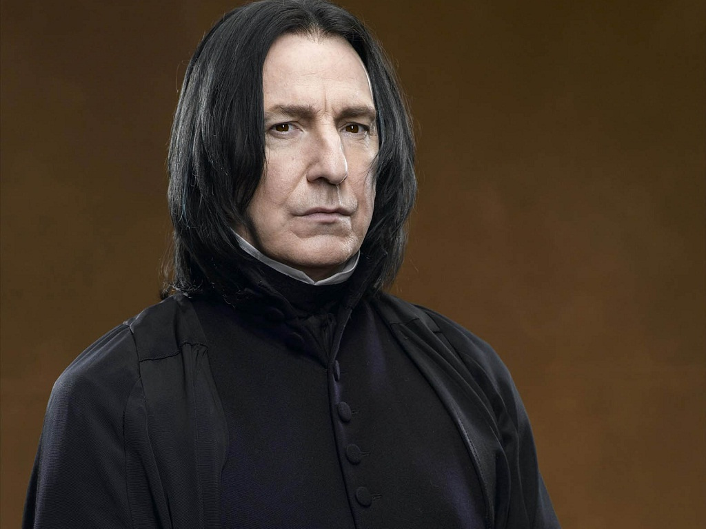
1Harry Potter (Severus Snape)
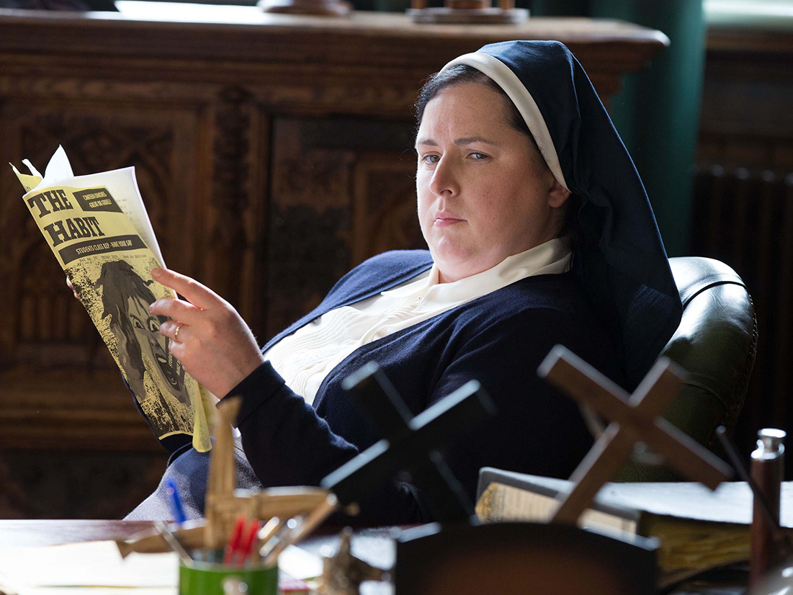
2Derry Girls (Sister Michael)
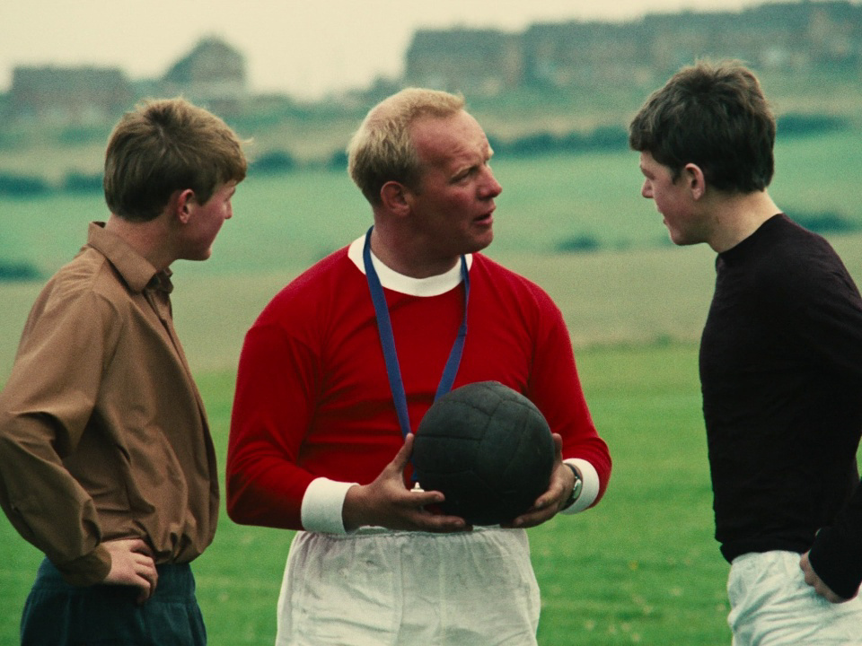
3Kes (Mr Sugden)
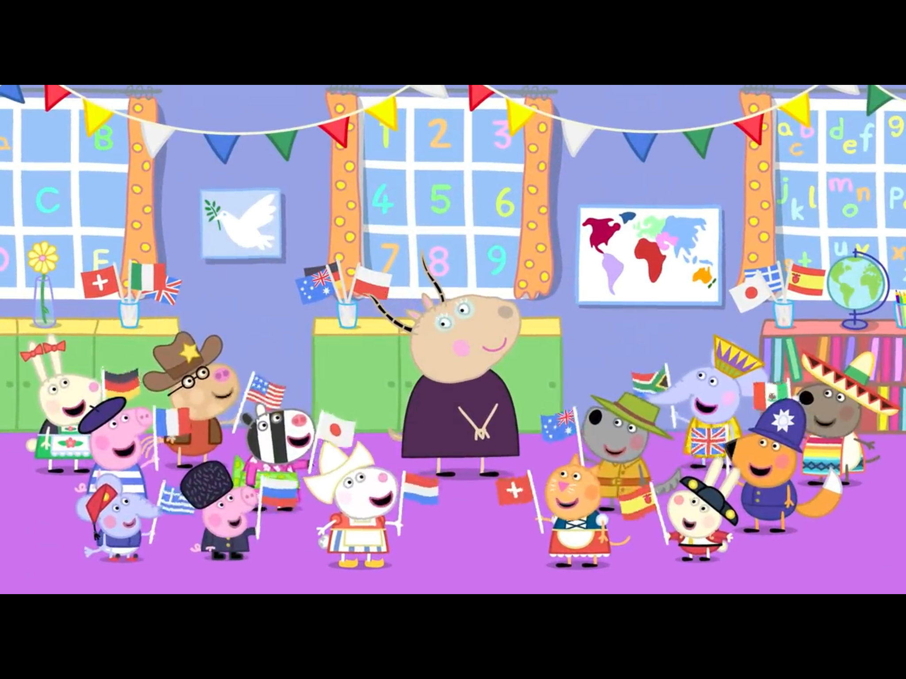
4Peppa Pig (Madame Gazelle)
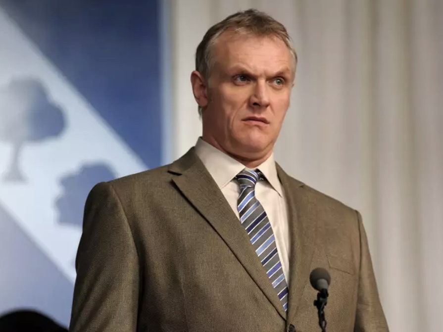
5The Inbetweeners (Phil Gilbert)
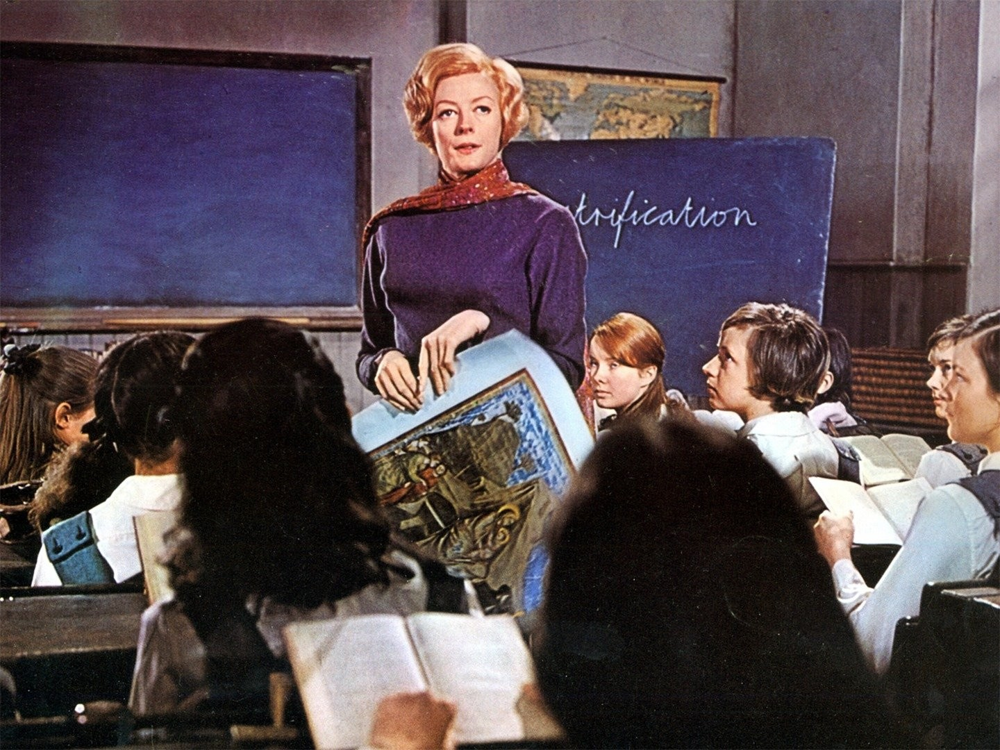
6The Prime of Miss Jean Brodie (Jean Brodie)
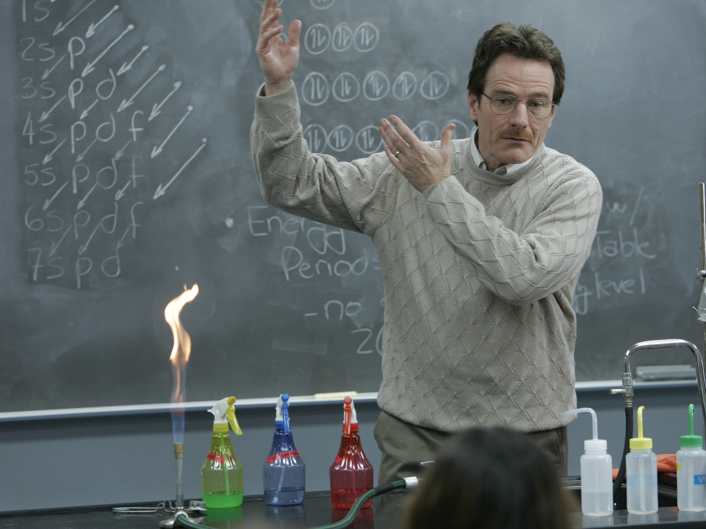
7Breaking Bad (Walter White)
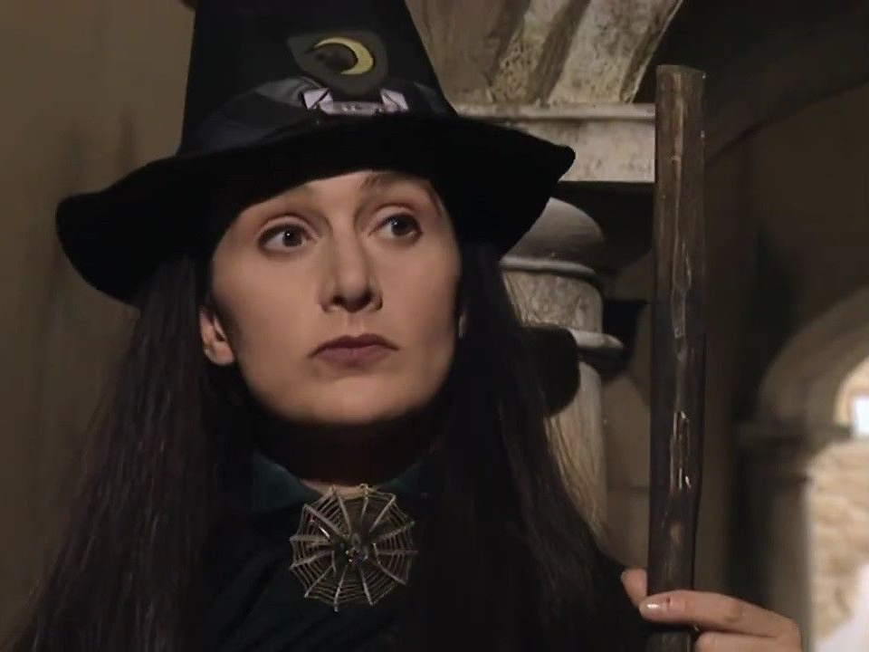
8The Worst Witch (Constance Hardbroom)
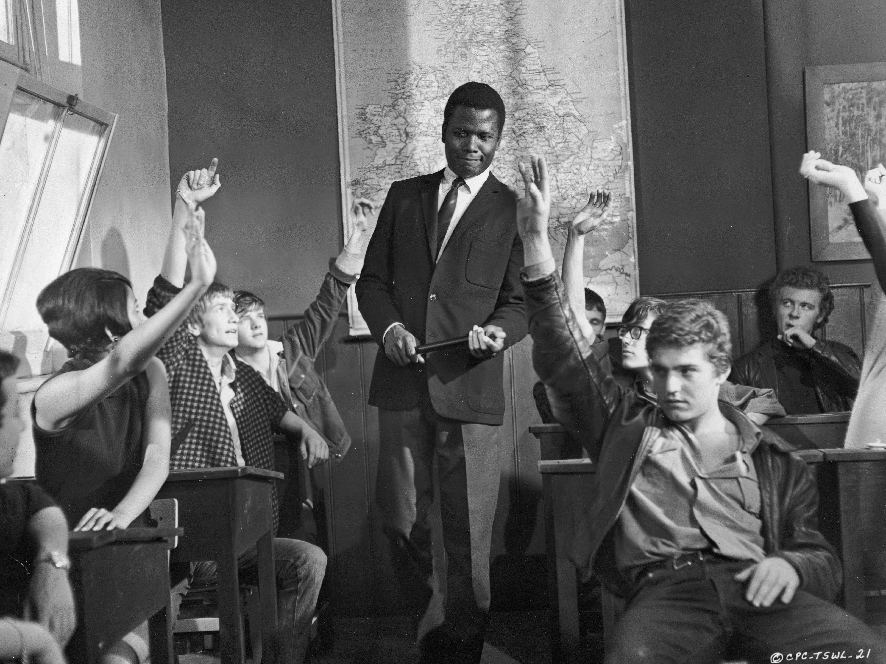
9To Sir, With Love (Mark Thackeray)
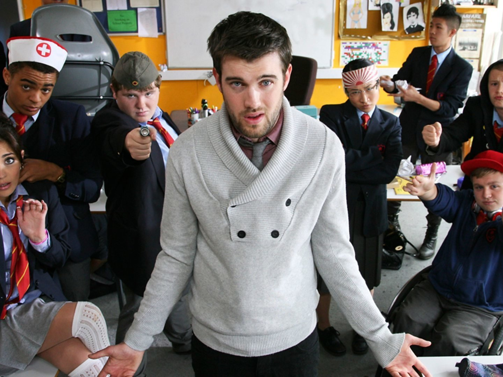
10Bad Education (Alfie Wickers)
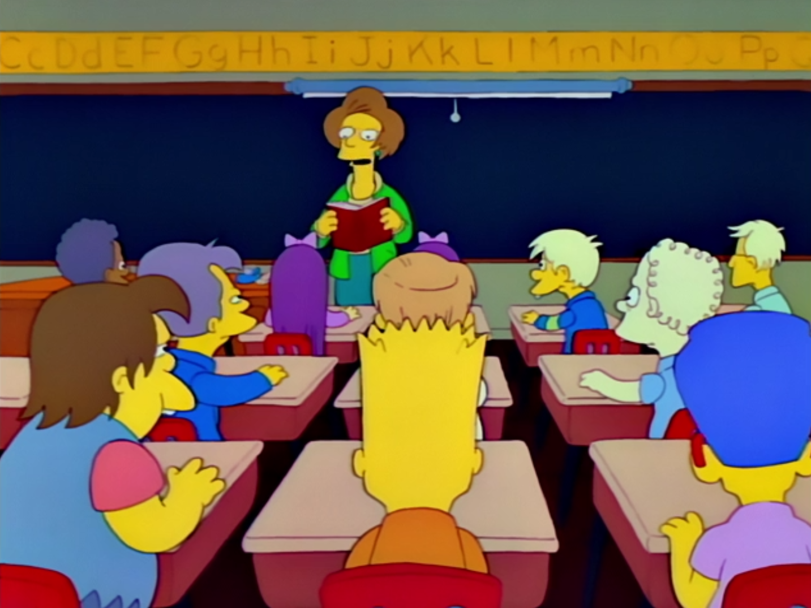
11The Simpsons (Edna Krabappel)
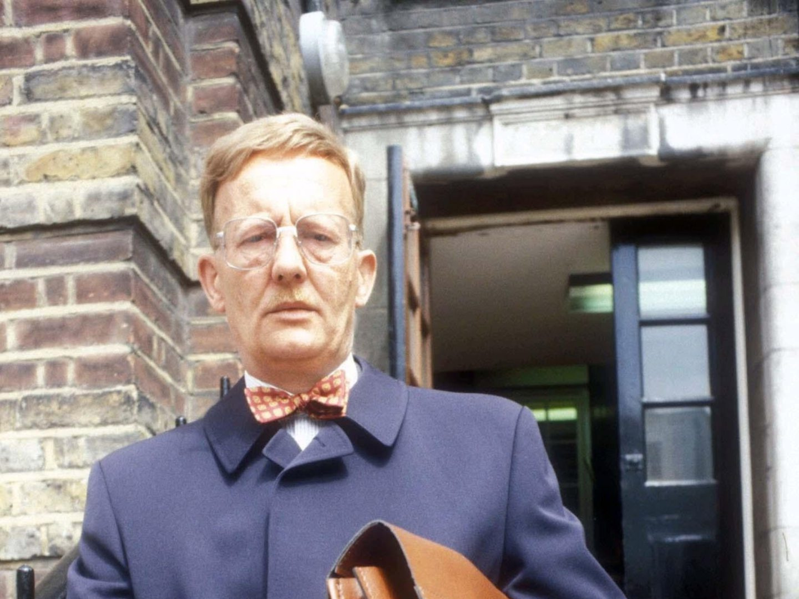
12Grange Hill (Maurice Bronson)
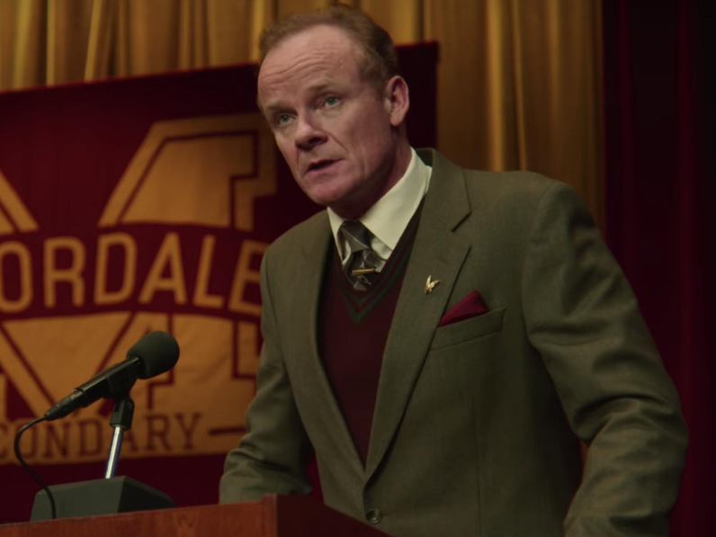
13Sex Education (Michael Groff)
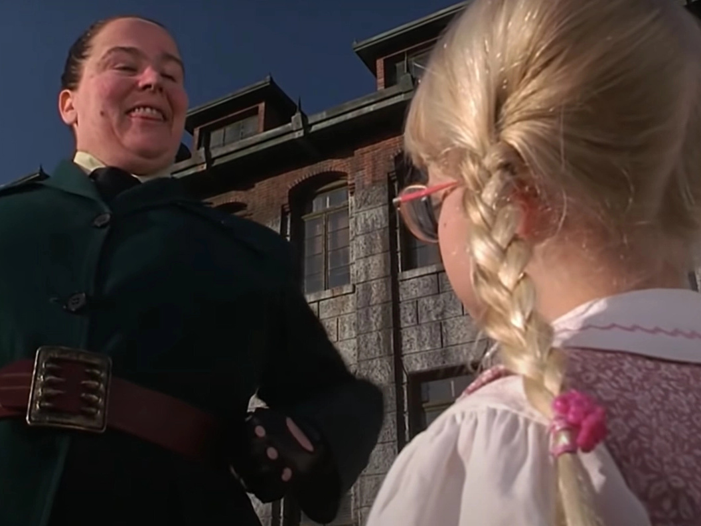
14Matilda (Agatha Trunchbull)
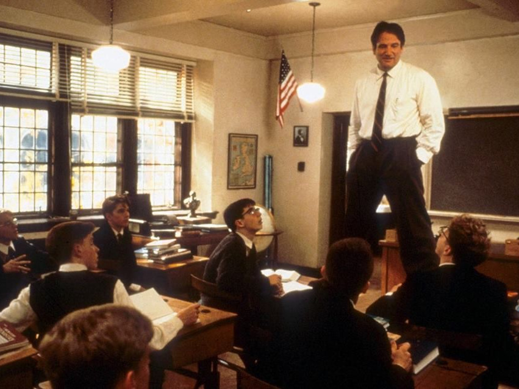
15Dead Poets Society (John Keating)
Round 2 - Which Came First?__ / 10
Circle the option that came FIRST. One point each.
Which came first?
a) Doctor Whob) Blue Peter (16 October 1958; Coronation Street December 1960; Doctor Who November 1963)c) Coronation Street
Which came first?
a) Decimal Dayb) The first Moon landingc) The first colour TV broadcast in Britain (BBC2, 1 July 1967, with Wimbledon; Moon landing 20 July 1969; Decimal Day 15 February 1971)
Which came first?
a) Cadbury's Dairy Milk (June 1905; the British Mars bar August 1932, made in Slough; the Kit Kat September 1935, but launched as Rowntree's Chocolate Crisp and not renamed until 1937)b) The Mars barc) The Kit Kat
Which came first?
a) The first text message being sentb) The first camera phone going on salec) The first website going online (CERN, 6 August 1991; first text message 3 December 1992; first camera phone May 1999)
Which came first?
a) The Ford Model Tb) The world's first traffic signal (gas-lit and hand-worked, outside Parliament, December 1868; Model T October 1908; first machine-sliced loaf July 1928. It exploded a month later and badly burned the constable working it, and Britain had no traffic lights again until 1929. If a team says Cleveland 1914, that was the first electric signal)c) Commercially sliced bread
Which came first?
a) Coca-Cola (first sold 8 May 1886; the Eiffel Tower opened 15 May 1889, and Nintendo was founded four months later, 23 September 1889, making playing cards)b) Nintendoc) The opening of the Eiffel Tower
Which came first?
a) Britain's first fish and chip shopb) Britain's first Indian restaurant (the Hindoostane Coffee House, 34 George Street, London, 1810 — fifty years before either fish and chip shop claim, and it closed within about a year for lack of business. The Underground opened 10 January 1863)c) The opening of the London Underground
Which came first?
a) Marks & Spencerb) Sainsbury's (Drury Lane 1869; the Marks & Spencer penny bazaar 1884; Tesco's first store 1931)c) Tesco
Which came first?
a) The Great Pyramid of Gizab) The last woolly mammoths dying outc) The invention of writing (cuneiform around 3200 BC; the Great Pyramid around 2560 BC; the last mammoths, a relict population on Wrangel Island, survived to around 2000 BC — so mammoths were still alive while the pyramids were going up)
Which came first?
a) YouTube (first video uploaded 23 April 2005; Montenegro's independence referendum May 2006; the iPhone went on sale June 2007)b) Montenegro splitting from Serbiac) The iPhone
Round 3 - Hidden Body Parts__ / 10
Every answer hides the name of a body part inside a longer word or phrase — CHINa, EARwig, KNEEcap, GUMboot. The questions are ordinary general knowledge. Ten different body parts. You score for the answer, not for spotting the body part.
Which SpaceX launch vehicle, 121 metres tall, had its Super Heavy first stage caught in mid-air by the launch tower's "chopstick" arms for the first time on 13 October 2024? Starship (starsHIP)
Which punctuation mark made its first appearance in print in a 1496 book by Pietro Bembo, from the Venice press of Aldus Manutius? Semicolon (semiCOLON)
Cuba, Jamaica, Hispaniola and Puerto Rico are the largest islands in which sea? The Caribbean (caRIBbean)
Which armoured South American mammal's name is Spanish for "little armoured one"? Armadillo (ARMadillo)
Which 1980 Stanley Kubrick film has Jack Nicholson as the winter caretaker of the Overlook Hotel? The Shining (SHINing)
In Three Men in a Boat, the three empty every scrap of food they have into one pot; which dish are they attempting, the one Montmorency offers to improve with a dead water rat? Irish stew (IRISh)
Which firework is named after the fourth-century Alexandrian saint whose spiked instrument of execution shattered at her touch, leaving Emperor Maxentius to have her beheaded instead? Catherine wheel (wHEEL)
Which Charles Dickens novel, his second, carries the subtitle "The Parish Boy's Progress"? Oliver Twist (OLIVER)
Which flower was the subject of the speculative bubble that collapsed in the Dutch Republic in February 1637? Tulip (tuLIP)
Which sweet, non-alcoholic drink of fizzy pop and grenadine, served with a maraschino cherry, is named after a 1930s Hollywood child star? Shirley Temple (TEMPLE)
Round 4 - Nicknames__ / 10
Each question gives a nickname. Name the person, place, building or thing. One point each.
Which northern English city, the world's first industrial city, was known in the 19th century as Cottonopolis? Manchester
Which British king was mocked as Farmer George for his enthusiasm for crop rotation and sheep breeding? George III
Which country is known as the Rainbow Nation? South Africa (coined by Archbishop Desmond Tutu after the first democratic elections in 1994)
Which British prime minister, in office from 1828 to 1830 and again for three weeks in 1834, was known as the Iron Duke? The Duke of Wellington (Arthur Wellesley, who beat Napoleon at Waterloo)
Which city is known as Auld Reekie? Edinburgh (Scots for "Old Smoky", after the pall of smoke over the Old Town)
Which London bridge was fitted with 37 viscous dampers and 52 tuned mass dampers to cure the fault that earned it the nickname the Wobbly Bridge? The Millennium Bridge (opened 10 June 2000, closed two days later, reopened February 2002)
The circular Cupertino headquarters nicknamed "the spaceship" opened in 2017. What is its actual name? Apple Park (designed by Norman Foster; employees call it the ring)
Which American inventor was known as the Wizard of Menlo Park? Thomas Edison (holder of 1,093 US patents)
Which European country is nicknamed l'Hexagone, the Hexagon, after the rough shape of its mainland? France
Howard Hughes's H-4 Hercules, an enormous wooden flying boat that flew only once — for 26 seconds, in November 1947 — is far better known by what nickname? The Spruce Goose (built almost entirely of birch, which Hughes resented)
Round 5 - Food and Drink__ / 10
One point per question.
The name of which Italian dessert translates as "pick me up"? Tiramisu
Protected status for the Cornish pasty specifies four filling ingredients: beef, potato, onion and which root vegetable? Swede (called turnip in Cornwall; accept either)
The red food colouring cochineal, E120, is produced by crushing and drying what? Insects (the scale insect Dactylopius coccus, farmed on prickly pear cactus)
Which alcoholic drink, drunk by the warriors in Beowulf, is made by fermenting honey with water? Mead
The chewy pearls in the bottom of a bubble tea are balls of which starch? Tapioca (extracted from the cassava root; accept cassava)
Laverbread, fried with bacon and cockles for a Welsh breakfast, is made by boiling and puréeing something plucked off the rocks of the Welsh coast. What? Seaweed (laver, boiled to a stiff green purée)
Named after the French chemist who first described it in 1912, what name is given to the reaction between amino acids and sugars that browns a seared steak and the crust of toast? The Maillard reaction (Louis-Camille Maillard; accept Maillard)
Which pasta takes its name from the Italian for "little worms" — a name also carried by the thin rice noodles sold for Asian cooking? Vermicelli
Which nut is ground with sugar to make marzipan, the layer that sits under the icing on a Christmas cake? Almonds
Vindaloo comes from the Portuguese carne de vinha d'alhos, meat marinated in wine and garlic. Which meat — still the one used in Goa, but rare on a British curry-house menu — was in the original? Pork
Round 6 - General Knowledge__ / 20
One point per question.
The Great Fire of London started on 2 September. In which year? 1666 (it began shortly after midnight at Thomas Farriner's bakery in Pudding Lane)
Star Trek was pitched to NBC by its creator as "Wagon Train to the stars". Name him. Gene Roddenberry (first broadcast 8 September 1966)
Which Dutch painter produced about 2,100 works in just over a decade, and cut off part of his own left ear in Arles in December 1888? Vincent van Gogh (about 860 of them oil paintings, most from his last two years)
Seconds after it sold for just over £1 million at Sotheby's in 2018, a framed canvas started shredding itself in front of the room. Which anonymous artist had hidden the shredder in the frame? Banksy (the shredder jammed halfway; the half-destroyed work was retitled Love Is in the Bin and resold in 2021 for £18.6 million)
In Greek myth, which king was granted a wish that everything he touched should turn to gold, then begged to have it taken back? King Midas (he could not eat or drink; Dionysus told him to wash in the river Pactolus)
In an MRI scan, what does the R stand for? Resonance (magnetic resonance imaging)
Which organ, sitting behind the stomach, makes the insulin that a person with type 1 diabetes has to inject? The pancreas (insulin was first isolated by Banting and Best in Toronto in 1921)
The name of which car manufacturer means "I roll" in Latin? Volvo (from volvere; first registered in 1911 as a trademark for ball bearings)
The Bank of England's £50 note carries King Charles III on the front. Which computer scientist is on the back? Alan Turing
Which currency, launched in 2009 by a person or group using the name Satoshi Nakamoto, was the world's first cryptocurrency? Bitcoin (the supply is capped at 21 million coins, and nobody has established who Nakamoto was)
Which British prime minister has spent the fewest days in office? Andy Burnham (43 days on 1 September 2026, having taken office on 20 July; Liz Truss served 49. Burnham passes her on 7 September, so this answer is only right until then)
Who was the first Roman emperor? Augustus (emperor from 27 BC to AD 14; accept Octavian)
In which month of the Islamic calendar do Muslims fast from dawn to sunset, ending with Eid al-Fitr? Ramadan (the ninth month)
Mary Quant, from her King's Road boutique Bazaar, is credited with popularising which garment? The miniskirt
A googol is a 1 followed by how many zeros? 100 (named in 1920 by Milton Sirotta, the nine-year-old nephew of mathematician Edward Kasner)
Which is the only venomous snake native to Britain? The adder (the grass snake and smooth snake are the other two natives)
Conkers, as used in the playground game, are the seeds of which tree? The horse chestnut (native to the Balkans, not Britain)
What is the name of the white marble mausoleum in Agra? The Taj Mahal (built by the Mughal emperor Shah Jahan for his wife, who died in 1631)
In 2014, which company paid $2.5 billion for Mojang, the Stockholm studio behind Minecraft? Microsoft
Which element has the chemical symbol W? Tungsten (W for wolfram; the highest melting point of any element, 3,422 °C)